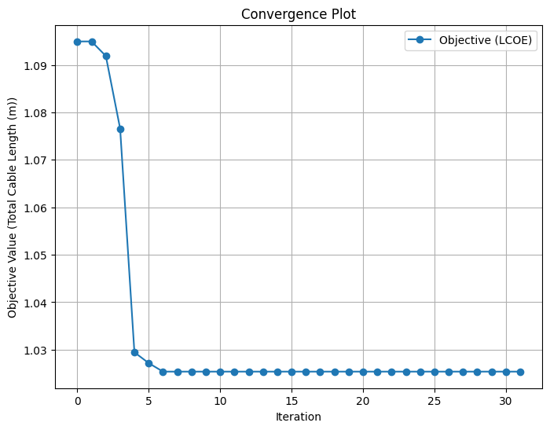
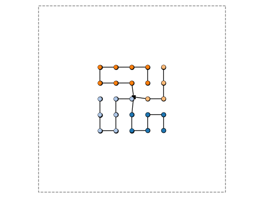

03: Simplified Floating#
In this example, we run Ard on a simplified floating platform problem.
We follow Example 02 closely, so descriptions are more sparse.
from pathlib import Path # optional, for nice path specifications
import pprint as pp # optional, for nice printing
import numpy as np # numerics library
import matplotlib.pyplot as plt # plotting capabilities
import windIO
import ard # technically we only really need this
from ard.utils.io import load_yaml # we grab a yaml loader here
from ard.api import set_up_ard_model # the secret sauce
from ard.viz.layout import plot_layout # a plotting tool!
import openmdao.api as om # for N2 diagrams from the OpenMDAO backend
# import optiwindnet.plotting
%matplotlib inline
# load input
path_inputs = Path.cwd().absolute() / "inputs"
input_dict = load_yaml(path_inputs / "ard_system.yaml")
# set up system
prob = set_up_ard_model(input_dict=input_dict, root_data_path=path_inputs)
Running OpenMDAO util to clean the output directories...
No OpenMDAO output directories found.
... done.
Created top-level OpenMDAO problem: top_level.
Adding top_level.
Adding layout2aep.
Adding layout to layout2aep.
Adding aepFLORIS to layout2aep.
Activating approximate totals on layout2aep
Adding landuse.
Adding collection.
Adding mooring_design.
Adding mooring_constraint.
Adding spacing_constraint.
Adding tcc.
Adding orbit.
Adding opex.
Adding financese.
System top_level built.
System top_level set up.
Some new components are added to the Ard model here, comparing to Example 02:
mooring_design: designs the mooring system, here simply by doing straight-line mooring lines to the constant-valued seafloormooring_constraint: a module to compute a constraint function to make sure the moorings don't violate regulatory requirements on proximity
# visualize model
if False:
om.n2(prob)
# run the model
prob.run_model()
# collapse the test result data
test_data = {
"AEP_val": float(prob.get_val("AEP_farm", units="GW*h")[0]),
"CapEx_val": float(prob.get_val("tcc.tcc", units="MUSD")[0]),
"BOS_val": float(prob.get_val("orbit.total_capex", units="MUSD")[0]),
"OpEx_val": float(prob.get_val("opex.opex", units="MUSD/yr")[0]),
"LCOE_val": float(prob.get_val("financese.lcoe", units="USD/MW/h")[0]),
"area_tight": float(prob.get_val("landuse.area_tight", units="km**2")[0]),
"coll_length": float(prob.get_val("collection.total_length_cables", units="km")[0]),
"mooring_spacing": float(
np.min(prob.get_val("mooring_constraint.mooring_spacing", units="km"))
),
"turbine_spacing": float(
np.min(prob.get_val("spacing_constraint.turbine_spacing", units="km"))
),
}
print("\n\nRESULTS:\n")
pp.pprint(test_data)
print("\n\n")
UserWarning: /opt/hostedtoolcache/Python/3.11.15/x64/lib/python3.11/site-packages/floris/core/flow_field.py:169
'where' used without 'out', expect unitialized memory in output. If this is intentional, use out=None.
ORBIT library intialized at '/opt/hostedtoolcache/Python/3.11.15/x64/lib/python3.11/site-packages/library'
RESULTS:
{'AEP_val': 410.14878567258273,
'BOS_val': 994.1921261768098,
'CapEx_val': 118.75948972475001,
'LCOE_val': 226.31146168189625,
'OpEx_val': 9.350000000000001,
'area_tight': 13.2496,
'coll_length': 21.89865877023397,
'mooring_spacing': 0.042875983926893214,
'turbine_spacing': 0.91}
optimize = True # set to False to skip optimization
if optimize:
# run the optimization
prob.run_driver()
prob.cleanup()
prob.check_totals(compact_print=True, show_only_incorrect=True)
# collapse the test result data
test_data = {
"spacing_primary": float(prob.get_val("spacing_primary")[0]),
"spacing_secondary": float(prob.get_val("spacing_secondary")[0]),
"angle_orientation": float(prob.get_val("angle_orientation")[0]),
"angle_skew": float(prob.get_val("angle_skew")[0]),
"AEP_val": float(prob.get_val("AEP_farm", units="GW*h")[0]),
"CapEx_val": float(prob.get_val("tcc.tcc", units="MUSD")[0]),
"BOS_val": float(prob.get_val("orbit.total_capex", units="MUSD")[0]),
"OpEx_val": float(prob.get_val("opex.opex", units="MUSD/yr")[0]),
"LCOE_val": float(prob.get_val("financese.lcoe", units="USD/MW/h")[0]),
"area_tight": float(prob.get_val("landuse.area_tight", units="km**2")[0]),
"coll_length": float(
prob.get_val("collection.total_length_cables", units="km")[0]
),
"mooring_spacing": float(
np.min(prob.get_val("mooring_constraint.mooring_spacing", units="km"))
),
"turbine_spacing": float(
np.min(prob.get_val("spacing_constraint.turbine_spacing", units="km"))
),
}
# clean up the recorder
prob.cleanup()
# print the results
print("\n\nRESULTS (opt):\n")
pp.pprint(test_data)
print("\n\n")
# plot convergence
## read cases
cr = om.CaseReader(
prob.get_outputs_dir() / input_dict["analysis_options"]["recorder"]["filepath"]
)
# Extract the driver cases
cases = cr.get_cases("driver")
# Initialize lists to store iteration data
iterations = []
objective_values = []
# Loop through the cases and extract iteration number and objective value
for i, case in enumerate(cases):
iterations.append(i)
obj_keys = input_dict["analysis_options"]["objectives"].keys()
assert (len(obj_keys)) == 1
objective_values.append(
case.get_objectives()[next(iter(obj_keys))] # get the unique entry
)
# Plot the convergence
plt.figure(figsize=(8, 6))
plt.plot(iterations, objective_values, marker="o", label="Objective (LCOE)")
plt.xlabel("Iteration")
plt.ylabel("Objective Value (Total Cable Length (m))")
plt.title("Convergence Plot")
plt.legend()
plt.grid()
plt.show()
Driver debug print for iter coord: rank0:ScipyOptimize_SLSQP|0
--------------------------------------------------------------
Design Vars
{'angle_orientation': array([0.]),
'angle_skew': array([0.]),
'spacing_primary': array([7.]),
'spacing_secondary': array([7.])}
UserWarning: /opt/hostedtoolcache/Python/3.11.15/x64/lib/python3.11/site-packages/floris/core/flow_field.py:169
'where' used without 'out', expect unitialized memory in output. If this is intentional, use out=None.
Objectives
{'collection.total_length_cables': array([21898.65877023])}
Driver debug print for iter coord: rank0:ScipyOptimize_SLSQP|1
--------------------------------------------------------------
Design Vars
{'angle_orientation': array([0.]),
'angle_skew': array([0.]),
'spacing_primary': array([7.]),
'spacing_secondary': array([7.])}
UserWarning: /opt/hostedtoolcache/Python/3.11.15/x64/lib/python3.11/site-packages/floris/core/flow_field.py:169
'where' used without 'out', expect unitialized memory in output. If this is intentional, use out=None.
Objectives
{'collection.total_length_cables': array([21898.65877023])}
Driver debug print for iter coord: rank0:ScipyOptimize_SLSQP|2
--------------------------------------------------------------
Design Vars
{'angle_orientation': array([-0.0015623]),
'angle_skew': array([-0.00232314]),
'spacing_primary': array([6.97889515]),
'spacing_secondary': array([6.98213724])}
Objectives
{'collection.total_length_cables': array([21837.49255108])}
Driver debug print for iter coord: rank0:ScipyOptimize_SLSQP|3
--------------------------------------------------------------
Design Vars
{'angle_orientation': array([-0.00155691]),
'angle_skew': array([-0.01337746]),
'spacing_primary': array([6.87338519]),
'spacing_secondary': array([6.89283536])}
Objectives
{'collection.total_length_cables': array([21531.72082273])}
Driver debug print for iter coord: rank0:ScipyOptimize_SLSQP|4
--------------------------------------------------------------
Design Vars
{'angle_orientation': array([-0.04614165]),
'angle_skew': array([-0.06753682]),
'spacing_primary': array([6.55396239]),
'spacing_secondary': array([6.61066324])}
Objectives
{'collection.total_length_cables': array([20589.08236909])}
Driver debug print for iter coord: rank0:ScipyOptimize_SLSQP|5
--------------------------------------------------------------
Design Vars
{'angle_orientation': array([-0.04660509]),
'angle_skew': array([-0.07290716]),
'spacing_primary': array([6.55384633]),
'spacing_secondary': array([6.57891522])}
Objectives
{'collection.total_length_cables': array([20543.51200862])}
Driver debug print for iter coord: rank0:ScipyOptimize_SLSQP|6
--------------------------------------------------------------
Design Vars
{'angle_orientation': array([-0.04765711]),
'angle_skew': array([-0.10099493]),
'spacing_primary': array([6.55387306]),
'spacing_secondary': array([6.55383488])}
Objectives
{'collection.total_length_cables': array([20507.67082995])}
Driver debug print for iter coord: rank0:ScipyOptimize_SLSQP|7
--------------------------------------------------------------
Design Vars
{'angle_orientation': array([-0.04771981]),
'angle_skew': array([-0.10111616]),
'spacing_primary': array([6.55384624]),
'spacing_secondary': array([6.553836])}
Objectives
{'collection.total_length_cables': array([20507.62685449])}
Driver debug print for iter coord: rank0:ScipyOptimize_SLSQP|8
--------------------------------------------------------------
Design Vars
{'angle_orientation': array([-0.04782782]),
'angle_skew': array([-0.10113029]),
'spacing_primary': array([6.55384627]),
'spacing_secondary': array([6.55383608])}
Objectives
{'collection.total_length_cables': array([20507.62682717])}
Driver debug print for iter coord: rank0:ScipyOptimize_SLSQP|9
--------------------------------------------------------------
Design Vars
{'angle_orientation': array([-0.04789293]),
'angle_skew': array([-0.10116029]),
'spacing_primary': array([6.5538462]),
'spacing_secondary': array([6.55383598])}
Objectives
{'collection.total_length_cables': array([20507.62640942])}
Driver debug print for iter coord: rank0:ScipyOptimize_SLSQP|10
---------------------------------------------------------------
Design Vars
{'angle_orientation': array([-0.04746369]),
'angle_skew': array([-0.10097838]),
'spacing_primary': array([6.55384649]),
'spacing_secondary': array([6.55383592])}
Objectives
{'collection.total_length_cables': array([20507.62778184])}
Driver debug print for iter coord: rank0:ScipyOptimize_SLSQP|11
---------------------------------------------------------------
Design Vars
{'angle_orientation': array([-0.04785001]),
'angle_skew': array([-0.1011421]),
'spacing_primary': array([6.55384623]),
'spacing_secondary': array([6.55383597])}
Objectives
{'collection.total_length_cables': array([20507.62654666])}
Driver debug print for iter coord: rank0:ScipyOptimize_SLSQP|12
---------------------------------------------------------------
Design Vars
{'angle_orientation': array([-0.04788864]),
'angle_skew': array([-0.10115847]),
'spacing_primary': array([6.5538462]),
'spacing_secondary': array([6.55383598])}
Objectives
{'collection.total_length_cables': array([20507.62642315])}
Driver debug print for iter coord: rank0:ScipyOptimize_SLSQP|13
---------------------------------------------------------------
Design Vars
{'angle_orientation': array([-0.0478925]),
'angle_skew': array([-0.10116011]),
'spacing_primary': array([6.5538462]),
'spacing_secondary': array([6.55383598])}
Objectives
{'collection.total_length_cables': array([20507.6264108])}
Driver debug print for iter coord: rank0:ScipyOptimize_SLSQP|14
---------------------------------------------------------------
Design Vars
{'angle_orientation': array([-0.04789289]),
'angle_skew': array([-0.10116027]),
'spacing_primary': array([6.5538462]),
'spacing_secondary': array([6.55383598])}
Objectives
{'collection.total_length_cables': array([20507.62640956])}
Driver debug print for iter coord: rank0:ScipyOptimize_SLSQP|15
---------------------------------------------------------------
Design Vars
{'angle_orientation': array([-0.04789293]),
'angle_skew': array([-0.10116029]),
'spacing_primary': array([6.5538462]),
'spacing_secondary': array([6.55383598])}
Objectives
{'collection.total_length_cables': array([20507.62640944])}
Driver debug print for iter coord: rank0:ScipyOptimize_SLSQP|16
---------------------------------------------------------------
Design Vars
{'angle_orientation': array([-0.04789293]),
'angle_skew': array([-0.10116029]),
'spacing_primary': array([6.5538462]),
'spacing_secondary': array([6.55383598])}
Objectives
{'collection.total_length_cables': array([20507.62640942])}
Driver debug print for iter coord: rank0:ScipyOptimize_SLSQP|17
---------------------------------------------------------------
Design Vars
{'angle_orientation': array([-0.04789293]),
'angle_skew': array([-0.10116029]),
'spacing_primary': array([6.5538462]),
'spacing_secondary': array([6.55383598])}
Objectives
{'collection.total_length_cables': array([20507.62640942])}
Driver debug print for iter coord: rank0:ScipyOptimize_SLSQP|18
---------------------------------------------------------------
Design Vars
{'angle_orientation': array([-0.04789293]),
'angle_skew': array([-0.10116029]),
'spacing_primary': array([6.5538462]),
'spacing_secondary': array([6.55383598])}
Objectives
{'collection.total_length_cables': array([20507.62640942])}
Driver debug print for iter coord: rank0:ScipyOptimize_SLSQP|19
---------------------------------------------------------------
Design Vars
{'angle_orientation': array([-0.04789293]),
'angle_skew': array([-0.10116029]),
'spacing_primary': array([6.5538462]),
'spacing_secondary': array([6.55383598])}
Objectives
{'collection.total_length_cables': array([20507.62640942])}
Driver debug print for iter coord: rank0:ScipyOptimize_SLSQP|20
---------------------------------------------------------------
Design Vars
{'angle_orientation': array([-0.04789293]),
'angle_skew': array([-0.10116029]),
'spacing_primary': array([6.5538462]),
'spacing_secondary': array([6.55383598])}
Objectives
{'collection.total_length_cables': array([20507.62640942])}
Driver debug print for iter coord: rank0:ScipyOptimize_SLSQP|21
---------------------------------------------------------------
Design Vars
{'angle_orientation': array([-0.04908828]),
'angle_skew': array([-0.10094795]),
'spacing_primary': array([6.55384669]),
'spacing_secondary': array([6.55383737])}
Objectives
{'collection.total_length_cables': array([20507.62773837])}
Driver debug print for iter coord: rank0:ScipyOptimize_SLSQP|22
---------------------------------------------------------------
Design Vars
{'angle_orientation': array([-0.04818389]),
'angle_skew': array([-0.1011086]),
'spacing_primary': array([6.55384632]),
'spacing_secondary': array([6.55383632])}
Objectives
{'collection.total_length_cables': array([20507.62673289])}
Driver debug print for iter coord: rank0:ScipyOptimize_SLSQP|23
---------------------------------------------------------------
Design Vars
{'angle_orientation': array([-0.04796376]),
'angle_skew': array([-0.10114771]),
'spacing_primary': array([6.55384623]),
'spacing_secondary': array([6.55383606])}
Objectives
{'collection.total_length_cables': array([20507.62648816])}
Driver debug print for iter coord: rank0:ScipyOptimize_SLSQP|24
---------------------------------------------------------------
Design Vars
{'angle_orientation': array([-0.04791017]),
'angle_skew': array([-0.10115723]),
'spacing_primary': array([6.5538462]),
'spacing_secondary': array([6.553836])}
Objectives
{'collection.total_length_cables': array([20507.62642859])}
Driver debug print for iter coord: rank0:ScipyOptimize_SLSQP|25
---------------------------------------------------------------
Design Vars
{'angle_orientation': array([-0.04789713]),
'angle_skew': array([-0.10115954]),
'spacing_primary': array([6.5538462]),
'spacing_secondary': array([6.55383598])}
Objectives
{'collection.total_length_cables': array([20507.62641409])}
Driver debug print for iter coord: rank0:ScipyOptimize_SLSQP|26
---------------------------------------------------------------
Design Vars
{'angle_orientation': array([-0.04789395]),
'angle_skew': array([-0.10116011]),
'spacing_primary': array([6.5538462]),
'spacing_secondary': array([6.55383598])}
Objectives
{'collection.total_length_cables': array([20507.62641056])}
Driver debug print for iter coord: rank0:ScipyOptimize_SLSQP|27
---------------------------------------------------------------
Design Vars
{'angle_orientation': array([-0.04789318]),
'angle_skew': array([-0.10116024]),
'spacing_primary': array([6.5538462]),
'spacing_secondary': array([6.55383598])}
Objectives
{'collection.total_length_cables': array([20507.6264097])}
Driver debug print for iter coord: rank0:ScipyOptimize_SLSQP|28
---------------------------------------------------------------
Design Vars
{'angle_orientation': array([-0.04789299]),
'angle_skew': array([-0.10116028]),
'spacing_primary': array([6.5538462]),
'spacing_secondary': array([6.55383598])}
Objectives
{'collection.total_length_cables': array([20507.62640949])}
Driver debug print for iter coord: rank0:ScipyOptimize_SLSQP|29
---------------------------------------------------------------
Design Vars
{'angle_orientation': array([-0.04789294]),
'angle_skew': array([-0.10116029]),
'spacing_primary': array([6.5538462]),
'spacing_secondary': array([6.55383598])}
Objectives
{'collection.total_length_cables': array([20507.62640944])}
Driver debug print for iter coord: rank0:ScipyOptimize_SLSQP|30
---------------------------------------------------------------
Design Vars
{'angle_orientation': array([-0.04789293]),
'angle_skew': array([-0.10116029]),
'spacing_primary': array([6.5538462]),
'spacing_secondary': array([6.55383598])}
Objectives
{'collection.total_length_cables': array([20507.62640943])}
Driver debug print for iter coord: rank0:ScipyOptimize_SLSQP|31
---------------------------------------------------------------
Design Vars
{'angle_orientation': array([-0.04789293]),
'angle_skew': array([-0.10116029]),
'spacing_primary': array([6.5538462]),
'spacing_secondary': array([6.55383598])}
Objectives
{'collection.total_length_cables': array([20507.62640942])}
Iteration limit reached (Exit mode 9)
Current function value: 1.0253813204712203
Iterations: 10
Function evaluations: 31
Gradient evaluations: 11
Optimization FAILED.
Iteration limit reached
-----------------------------------
-----------------
Total Derivatives
-----------------
+------------------------------------+-------------------+---------------------+-------------------+------------------------+-------------------+
| 'of' variable | 'wrt' variable | calc val @ max viol | fd val @ max viol | (calc-fd) - (a + r*fd) | error desc |
+====================================+===================+=====================+===================+========================+===================+
| AEP_farm | angle_orientation | 2.288937e+16 | -1.676689e+10 | 2.288939e+16 | 2.288939e+16>TOL |
+------------------------------------+-------------------+---------------------+-------------------+------------------------+-------------------+
| AEP_farm | angle_skew | -1.456262e+10 | 1.674456e+10 | 3.130716e+10 | 3.130716e+10>TOL |
+------------------------------------+-------------------+---------------------+-------------------+------------------------+-------------------+
| AEP_farm | spacing_primary | 1.192106e+10 | 1.271811e+10 | 7.970434e+08 | 7.970434e+08>TOL |
+------------------------------------+-------------------+---------------------+-------------------+------------------------+-------------------+
| AEP_farm | spacing_secondary | -1.485523e+09 | 2.335510e+10 | 2.484060e+10 | 2.484060e+10>TOL |
+------------------------------------+-------------------+---------------------+-------------------+------------------------+-------------------+
| collection.total_length_cables | angle_orientation | 1.110941e+00 | 1.549118e+00 | 4.381758e-01 | 4.381758e-01>TOL |
+------------------------------------+-------------------+---------------------+-------------------+------------------------+-------------------+
| collection.total_length_cables | angle_skew | 1.319410e+00 | 1.667240e+00 | 3.478280e-01 | 3.478280e-01>TOL |
+------------------------------------+-------------------+---------------------+-------------------+------------------------+-------------------+
| spacing_constraint.turbine_spacing | angle_orientation | -3.216997e-04 | 0.000000e+00 | 3.216997e-04 | 3.216997e-04>TOL |
+------------------------------------+-------------------+---------------------+-------------------+------------------------+-------------------+
| spacing_constraint.turbine_spacing | angle_skew | -4.232218e-02 | -4.209647e-02 | 2.256678e-04 | 2.256678e-04>TOL |
+------------------------------------+-------------------+---------------------+-------------------+------------------------+-------------------+
| spacing_constraint.turbine_spacing | spacing_primary | 7.275932e-15 | 4.656613e-10 | 4.656535e-10 | 4.656535e-10>TOL |
+------------------------------------+-------------------+---------------------+-------------------+------------------------+-------------------+
| spacing_constraint.turbine_spacing | spacing_secondary | -1.455194e-14 | 4.656613e-10 | 4.656754e-10 | 4.656754e-10>TOL |
+------------------------------------+-------------------+---------------------+-------------------+------------------------+-------------------+
RESULTS (opt):
{'AEP_val': 406.0035223015031,
'BOS_val': 993.5763606645713,
'CapEx_val': 118.75948972475001,
'LCOE_val': 228.50833473878868,
'OpEx_val': 9.350000000000001,
'angle_orientation': -0.04789293104723208,
'angle_skew': -0.10116028757953238,
'area_tight': 11.614446043073146,
'coll_length': 20.507626409424407,
'mooring_spacing': -0.0010986122876681097,
'spacing_primary': 6.553846195817025,
'spacing_secondary': 6.553835979084373,
'turbine_spacing': 0.8520000052389535}

plot_layout(prob, input_dict=input_dict, show_image=True, include_cable_routing=True)

<Axes: >